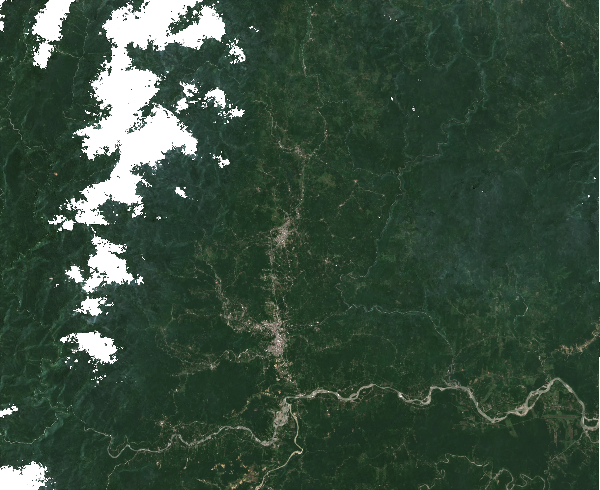

Andes Pulso
Mira la historia. Comprueba la evidencia.
- Video
- Datos
- Método
- Fuentes
Ciencia para un país vivo
De los Andes a la Amazonía y el océano. Explora cómo cambia Ecuador, con mapas, historias y evidencia que puedes comprobar.
Ilustración conceptual · no representa observaciones ni cartografía
Desde el espacio · Napo
Compara escenas fechadas de Tena y Archidona. Mira qué cambió y qué permiten afirmar las imágenes.
Abrir comparación de ríos ↗
Andes Pulso
Biblioteca de Ecuador
Investigación sobre Ecuador, conectada con los temas y datos del atlas.
Consultar estudiosUn proyecto independiente de divulgación y datos abiertos. Observaciones, interpretaciones y límites se mantienen separados. No es un sistema de alerta ni un servicio oficial.
Cómo leer la evidencia ↗